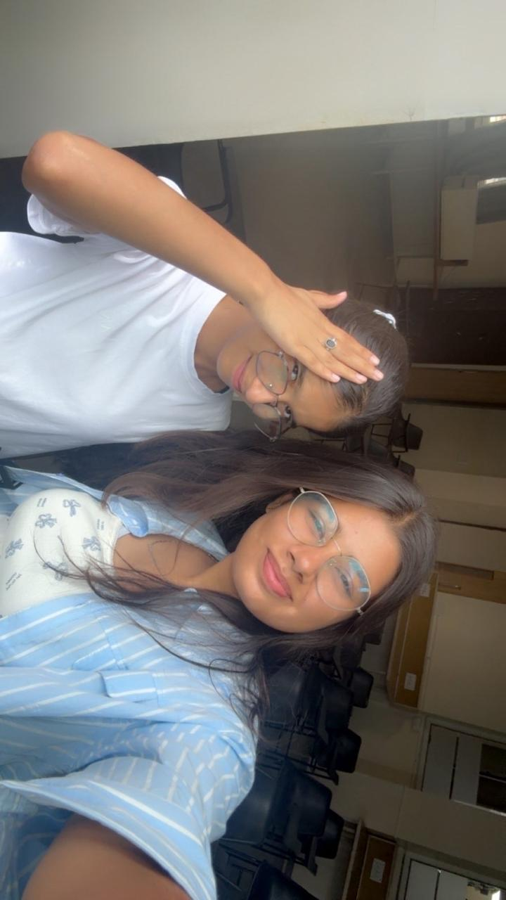
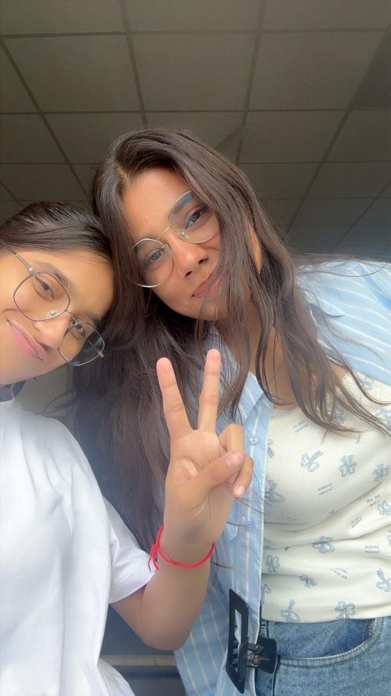
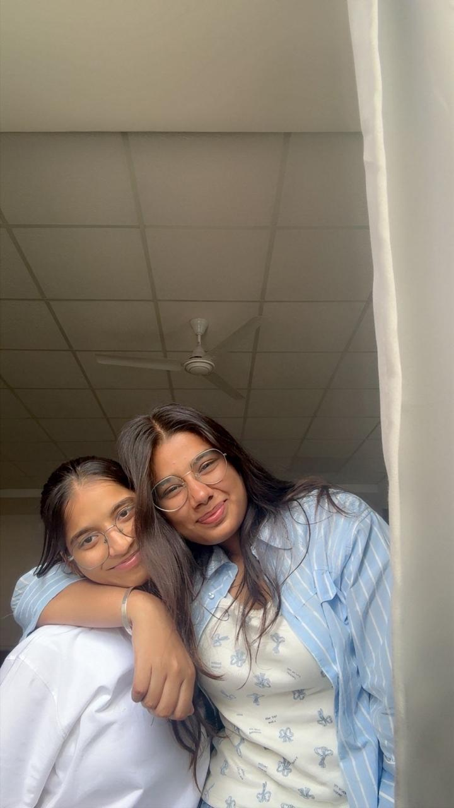
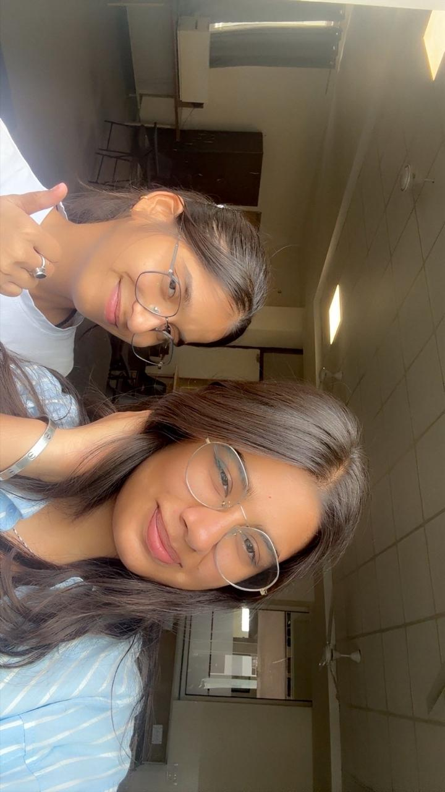
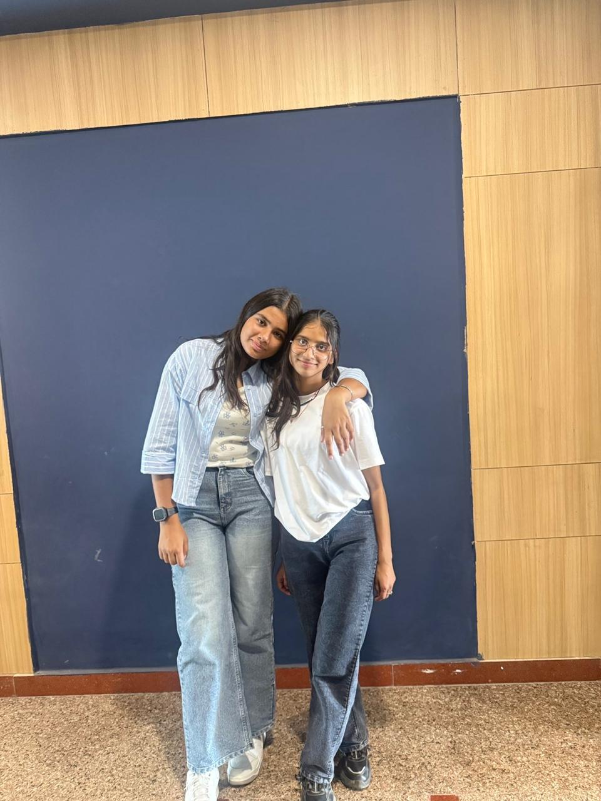
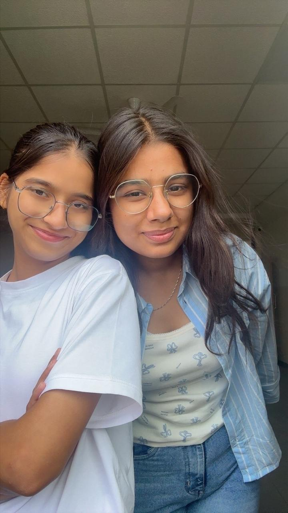
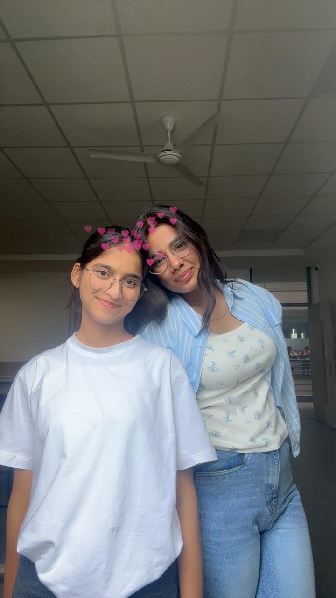
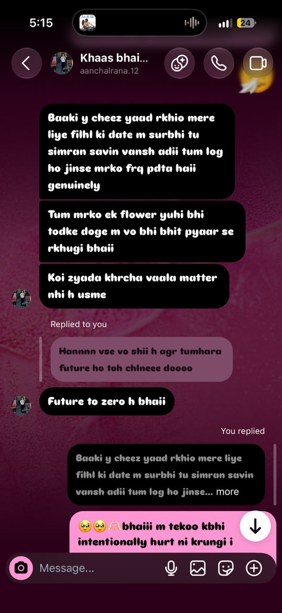
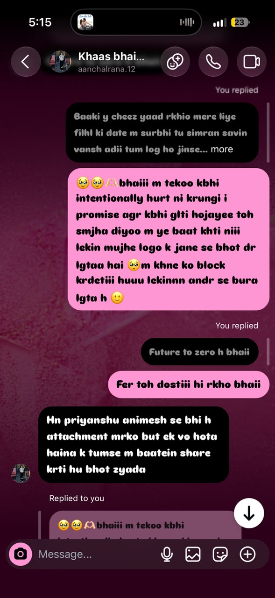
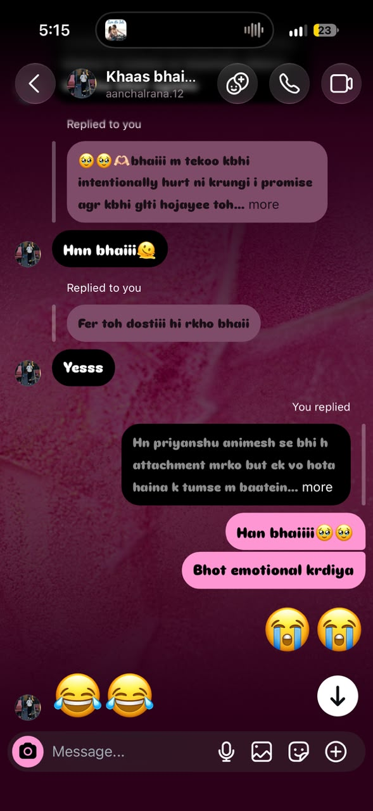

Some people become such a part of our everyday lives that even their absence has a presence. I don't want our friendship to end with a fight.
Come, lets have a choti si baat chit jo ki mai samne shyd nahi bol paungi ♡Made with memories and a little courage.
The laughs, the random moments, the pictures that probably mean more than they look like.







I went back and read those old chats. The promise, maybe this promise is the reason that I am trying again.



Because some moments deserve to be watched again or thodi si aise spelling mistakes bhi ho skti hai kyuki mai abhi function se aayi hu and ab raat mei bna rhi hu ye website,
Dekh to be honest mujhe nahi ptaaa mai kya boluuu lekin i just dont feel it right ki the girl i once called my bestest friend from the core of my heart is somewhat a stranger now. Lekin mai genuinely kabhi aisa nahi chahtiii thii. Jo hmari laptop pe ldai huii uske baad se bhaii mai bhot roii mtlbb i mean i thought ki bhai aise toh nahi thh hm like seriously? Ispe ld rhe h vo bhi chilla chilla ke. Kyu???
Sirf ego ko satisfy krne ke liyeee bhaii mai nahi chahtiiii genuinely nahiii.
Bhai mujhse nahi hota jab meri mmy sham ko puchti hai ki aanchal theek haiii??? Usne khana khayaa??? Bunk toh nahi kra tumne??? Aanchal se puchle konse kapde lene hai??? Kab aayegi Aanchal ghr??? Aanchal ko call kriyo??? Tujhse achi toh Aanchal hai meri sari baat suntii hai???
Dekh to be honest mujhe is baat ka bilkul bura nahi lgta ki mmy ye sb puchti hai ya merse jyada importance mere ghr mei aanchal ki hai but is baat ka bhot bura lgta haii ki mujhe in sab baaton ka jwaab nahi miltaa or mujhe hmesha jhuth bolna pdta hai.
3 mahine se hmne baat nahi ki hai and agr ki hai toh sirf ldai ki haii but ab mai or nahi ld sktii bhai mujhse toh nahi ho payegaaa genuinelyyyyy but iske bich mei hm vo 5 mahine bhul gyeee jo hm saath th better than everyone elseeee orrr vo ek mahina jisme hm hmesha saath th chahee jo mrzii ho.
A very big hug to all that timeeeee i really miss it. Aise toh nahi th hm ki aisi baaton pe ldai kree??? Ya itna weak toh nahi tha bond hmara? Everything was so good so special. We promised to stay forever Hainaaa??
Lekin ab hm aise hai kii ek dusre ki shakal bhi na dekh kr khush like for real??? I dont believe itttt bhaiii na mai chhati believe krnaa to be honest. Hogya bs ab mera tohhhh mai toh nahi ld skti bhai.
Or maiii is guilt mei bhi nahi reh sktii ki mere wajah se tera tere bhaii se bhi sb khrab hogyaaa. Bhot baateinnn haiii jo bhot buri lgii thii lekin bhot baatein aisi bhi toh hainaa jo hmare moments thhhh unke liye buri baatein chdi ja skti hai.
Yaarrr mai bilkul nahi chahtiii ki aise 4-5 mahine mei teri degree hojayegi fir tu chli jayegi, mai nahi chahtiii ki in case hm life mei kabhi mile toh mn meii hate rheee.
And tujhe pta hai dev ne mujhe like subah aise bola ki Aanchal didi achi hai unse ldai khtm krdo na vo nahi man rhi toh maii baat krta hu and i really felt that.
I do feel bad for everything yarrr and i really miss you infact i miss us. I swear I never had any kind of hate for you and I never will I promise.
Jab phle ldai hui thi toh mne Savin Vansh ko bhi tujhse baat krne ko yahi kehkr mnaya tha ki “baat yaad rkhni hai toh insaan bhuljao or insaan chahiye toh baat bhuljao” same hi mai applicate krri hu ab :)
Jab ek try tune kiya tha sb theek krne ka ab ek try mai krri huuu ✨🫶🏻
I miss you and I miss us ✨🫶🏻
I love you 🫶🏻
And a very big thankyou for all the efforts you ever made for me. 🫶🏻
No pressure. No expectations.
Just one honest try, from my side. Maybe I miss the elder sister I found in you 🫶🏻